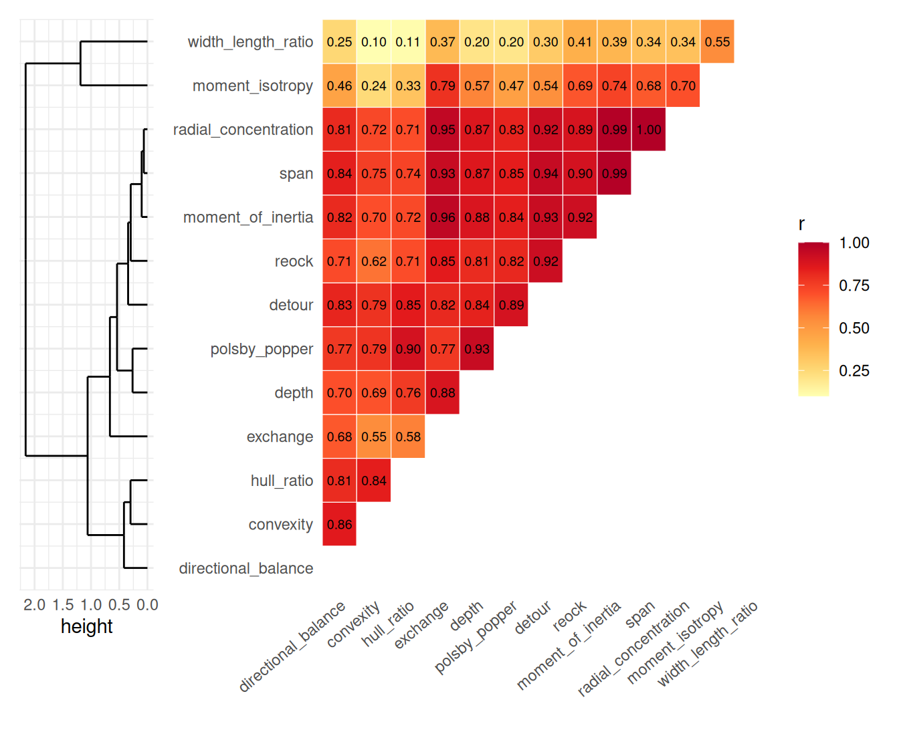

10. Comparing Shape Indices: North Carolina Counties
2026-07-22
Source:vignettes/j-nc-counties-comparison.qmd
1 Introduction
The other vignettes in this package derive each index in isolation, on synthetic shapes built to isolate one property at a time. This one runs some of the indices on a real dataset: the North Carolina county boundaries bundled with sf) 1 The vignette is primarily to show how the indices perform on a real dataset with varying shapes and weights.
2 Indices point to stories about geography and history
County lines are surveyed straight lines and coastlines, not organic growth boundaries, so the shapes here test something specific: how much does an index notice a barrier island, a diagonal sliver, or a county that’s convex but stretched?
![]() Caswell |
![]() Dare |
![]() Currituck |
![]() Camden |
![]() Lincoln |
|
|---|---|---|---|---|---|
| Convexity | 1.00 | 0.74 | 0.80 | 0.99 | 1.00 |
| Moment of inertia | 0.95 | 0.23 | 0.36 | 0.32 | 0.56 |
| Moment isotropy | 0.91 | 0.19 | 0.18 | 0.04 | 0.11 |
| Directional balance | 1.00 | 0.79 | 0.90 | 0.95 | 0.99 |
| Span | 0.98 | 0.54 | 0.64 | 0.61 | 0.79 |
| Radial concentration | 0.98 | 0.60 | 0.65 | 0.61 | 0.79 |
| Depth | 0.89 | 0.60 | 0.37 | 0.51 | 0.68 |
| Hull ratio | 1.00 | 0.26 | 0.55 | 0.86 | 0.99 |
| Polsby-Popper | 0.79 | 0.08 | 0.10 | 0.34 | 0.58 |
| Width-length ratio | 0.96 | 0.40 | 0.43 | 0.21 | 0.30 |
| Reock | 0.63 | 0.09 | 0.17 | 0.17 | 0.34 |
| Detour | 0.89 | 0.41 | 0.56 | 0.60 | 0.77 |
| Exchange | 0.91 | 0.65 | 0.51 | 0.45 | 0.62 |
Caswell is the baseline: a simple, nearly-rectangular Piedmont county with no natural features at the boundary. The county is created from bisecting Orange county and then again to form Caswell adn Pearson. Convexity, hull ratio, and width-length ratio are all at or near 1. Even here, Reock only reaches 0.63 (a perfect square’s Reock score is exactly ). Truly, disk shaped counties are hard to come by and Reock penalises any deviation from the circle more heavily than other indices.
Dare and Currituck are Outer Banks counties where a compact mainland piece connects to a long barrier-island strip across an open sound. Almost index penalises this geographical arrangement: convexity 0.74/0.80, hull ratio 0.26/0.55, Polsby-Popper as low as 0.08 for Dare.
Width-length ratio agrees too, now: 0.40 for Dare and 0.43 for Currituck, both low like every other elongation-sensitive measure here. That agreement is itself worth a note: this index used to score Currituck at 0.96 - nearly a perfect square - because its old axis-aligned bounding box happened to line up close to the coordinate axes, an accident of how the county is drawn on the map, not a property of its actual shape. Switching to the minimum-area bounding rectangle at any rotation (sf::st_minimum_rotated_rectangle()) fixes this: Currituck’s true elongation, independent of orientation, is close to Dare’s own, not the 0.96 the old orientation-sensitive version reported.
Camden is the classic split: convexity 0.99, essentially convex, no real notches for a line to cross. Span/radial concentration agree (0.61/0.61): Camden is a long, narrow diagonal sliver, and convexity/span/radial-concentration agree broadly. On the other hand, moment isotropy as well as moment of inertia isolates that elongation directly and puts a sharp number on it: 0.04/0.32. Camden’s own principal moments differ by roughly 27-to-1.
Lincoln sharpens that same point with no boundary complexity at all involved: convexity is a perfect 1.00 and hull ratio 0.99. Yet Reock is 0.34, width-length ratio 0.30, and moment isotropy 0.11; all three elongation-sensitive measures still penalise it for being stretched, each via a different route (bounding circle, bounding box, mass tensor). Convex and compact are different properties, and a shape can score perfectly on one while scoring poorly on the other.
3 How do the indices relate to each other?

The above correlation matrix uses unweighted indices and hierarchical clustering. Across these 100 counties, the indices condense into three primary behaviors dominated by whether they respond to elongation or boundary deformities. The core Elongation Cluster—comprising moment of inertia, span, radial concentration, and Reock—behaves almost interchangeably, as county-level elongation swamps the theoretical differences between their formulas. Other measures fold into this group via distinct mechanics: exchange_index reads elongation via area overlap (0.96 with MOI), detour_index captures hull-level stretching (0.94 with span), depth_index aligns with boundary complexity (0.93 with Polsby-Popper), and width_length_ratio_index - since being corrected to use the minimum-area bounding rectangle at any rotation rather than an axis-aligned one - now tracks the same elongation cleanly (0.80 with moment isotropy, its own strongest tie in the whole matrix). Moment isotropy belongs to this family but sits slightly apart (0.74 with MOI) because it isolates pure axis elongation, remaining structurally blind to dispersal or boundary noise.
Convexity and hull ratio form a second, distinct cluster (0.84) that isolates concave boundary departures while ignoring elongation entirely. The near-zero correlation between moment isotropy and convexity (0.24) provides clean empirical proof that elongation and concavity are independent structural properties on real geography rather than redundant descriptions. Similarly, directional balance tracks first-harmonic bearing preference rather than axis shape; its weak tie to moment isotropy (0.46) confirms that bearing preference and mass-distribution symmetry operate as independent axes despite both belonging to the elongation-adjacent family.
Connecting these groups, Polsby-Popper acts as a hybrid bridge between the convexity and elongation clusters (0.90 with hull ratio; 0.84 with MOI) because perimeter length is inherently inflated by both boundary roughness and stretched geometries.
width_length_ratio_index is no longer the outlier it once was. An earlier, axis-aligned version of this index correlated weakly with almost everything in this dataset, because its own orientation noise - which way a county happens to be drawn relative to the coordinate axes, not a property of its shape - swamped the real elongation signal underneath. With that noise removed, its strongest ties sit squarely inside the elongation cluster: 0.80 with moment isotropy, 0.78 with exchange, 0.76 with moment of inertia. It still correlates more loosely with the boundary-complexity side of things (0.31 with convexity, 0.31 with hull ratio) - a bounding rectangle, however it’s computed, still can’t see concavity the way a convex-hull-based measure can - but it is a member of a real cluster now, not an island of its own.
4 Weighting a collection of polygons
byrow = FALSE treats every row instead as a weighted sub-polygon of one overall shape (st_union(x)), returning a single-row result. weights = NULL (the default) weights each row by its own physical area, which reproduces the plain unweighted indices on the union; a column name or numeric vector weights rows by something else instead - here, births (BIR74) as a population proxy for four contiguous Research Triangle counties:
| weighted_by_area | weighted_by_births | |
|---|---|---|
| convexity_index | 0.98 | 0.99 |
| moment_of_inertia_index | 0.82 | 0.70 |
| moment_isotropy_index | 0.51 | 0.64 |
| directional_balance_index | 0.98 | 0.96 |
| span_index | 0.92 | 0.85 |
| radial_concentration_index | 0.92 | 0.85 |
| depth_index | 0.69 | 0.51 |
| hull_ratio_index | 0.83 | 0.83 |
| polsby_popper_index | 0.51 | 0.51 |
| width_length_ratio_index | 0.69 | 0.69 |
| reock_index | 0.48 | 0.48 |
| detour_index | 0.83 | 0.83 |
| exchange_index | 0.81 | 0.81 |
| total_weight | 5811314465.44 | 27264.00 |
Same union geometry results in the same hull_ratio_index (it has no weighted form - it’s a property of the convex hull’s boundary, not a sum over pieces) - but convexity_index, moment_of_inertia_index, and span_index all shift once births, rather than raw land area, decide how much each county’s shape “counts”.
Weighted by each county’s own area (weights = NULL, the default), the four-county union scores convexity 0.983 and MOI 0.815. Switching the weight to 1974 births, so that Wake dominates in one part of the union, moves MOI, span, and radial concentration all down together (0.697, 0.849, 0.852). Convexity moves the other way, slightly up (0.990). It does not depend on where the centre of mass is at all and therefore behaves as expected.
Reweighting the mesh reveals that moment isotropy and directional balance capture fundamentally different spatial mechanisms when mass shifts toward a dominant county like Wake. Moment isotropy moves up (0.507 to 0.643), shifting opposite to MOI, span, and radial concentration. While center-relative metrics penalize how far mass drifts from the union’s geometric middle, moment isotropy evaluates only the shape of the distribution around its own center—concentrating weight into Wake (a relatively round county within a long four-county strip) makes the core mass footprint more isotropic even as its center drifts. Conversely, directional balance moves down (0.984 to 0.960), tracking alongside MOI and span because shifting weight toward Wake creates an asymmetric angular pull from the new centroid. Moment isotropy acts as the lone outlier here precisely because it ignores center-relative displacement, proving it operates as an independent axis rather than a redundant metric. (Note: total_weight reflects raw area in versus total births, so row totals represent different scales).
5 Conclusion
No single shape index here is redundant: real-world geographies split metrics into distinct structural behaviors rather than a simple continuum. While Moment of Inertia (MOI), span, and radial concentration cluster tightly around overall elongation, measures like convexity and hull ratio track a fundamentally different property—concavity—explaining why a shape can be nearly convex (e.g., Lincoln) while scoring poorly on circle-referenced compactness. Moment isotropy sits loosely in the elongation group but acts as an independent axis: it is virtually immune to boundary concavity and can shift in the opposite direction from its cluster under population reweighting because it ignores centroid offset entirely, evaluating only the symmetry of the mass footprint itself.
Directional balance is about angular bearing preference (whether mass leans toward one direction) rather than axis preference (whether mass aligns along a line), yielding a remarkably weak correlation with moment isotropy (0.46). Under mesh reweighting, directional balance aligns with MOI and span because all three respond to centroid-relative mass drift—making it uniquely sensitive to split geometries like Dare and Currituck’s mainland-and-barrier-island shapes. Ultimately, width_length_ratio_index - once corrected to use the minimum-area bounding rectangle at any rotation rather than an axis-aligned one - joins the elongation cluster rather than sitting apart from it, and population-weighting doesn’t just tweak scores across the mesh-based indices—it fundamentally alters which spatial property each one reveals.